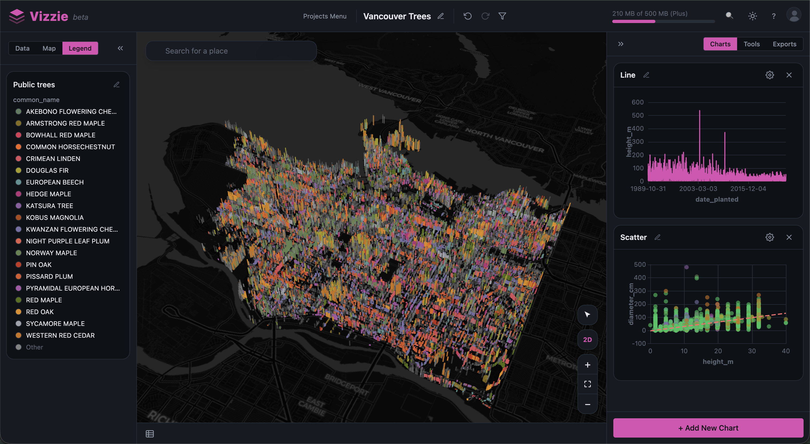

Vizzie is an easy-to-use mapping and analytics platform that connects you to the world's open data — no downloads, no GIS specialists. Just beautiful maps, charts, and data stories.
Now in beta — a working version is live, and we're welcoming early users. Try an example, no sign-up needed →
Browse and connect to thousands of open-data portals around the world, live — nothing to download or reformat.
Map, chart, and analyse place-based data together on one linked canvas — powerful spatial analysis, without needing to be an expert.
Turn what you find into presentation-ready maps and interactive stories you can publish and share with a link.
Vancouver's 150,000 street trees — connected live, mapped in 3D, and charted, all in one place.

…and new portals added regularly. Counts as at 6 Aug 2026.
Open any of these live in Vizzie — no sign-up needed. Pan, filter, and edit the maps and charts to get a feel for it.
150,000+ street trees by species, size, and location — mapped live in 3D.
Open live →Every recent NYC crash as a heatmap, with people injured by borough and leading causes.
Open live →The bike-share network by renting status, with live capacity and availability charts.
Open live →Food venues across the city, coloured by industry and sized by seating capacity.
Open live →Where the movies were shot, by production company and neighbourhood.
Open live →Every hawker centre by operational status and number of cooked-food stalls.
Open live →All of this data is already public and free. Vizzie just makes it usable — connected live, mapped, and ready to share.
Aligned with the Open Data Charter.
We're welcoming early users and would love your feedback. Create a free account, or say hello.
Questions? Email hello@vizzie.org.